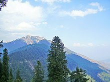
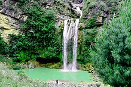
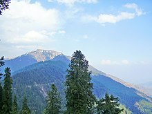
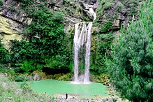

International Conference on Nutrition & Health (ICNH)
International Conference on Nutrition & Health conference gives an exciting opportunity to meet with industry peers like-minded people. Conferences bring together people from all different geographical areas who share a common discipline or field. Nutrition 2020 gives you the opportunity to talk to these people one-on-one about what they are working on, and it may even give you advice on how to enhance your own work. Nutrition & Health is defined as the study of food science which highly deals with food and also it gives several factors related to health. At this Nutrition & Health Conference, you have the opportunity to get feedback on your work from people who have never seen it before and may provide new insight. Briefly, it is an investment in yourself, your career and your company. Nutrition and being healthy highly depend on food, environment, etc. Nowadays nutrition deficiencies are the major cause of children death in the world. Undernutrition and over nutrition are the two classes of Nutrition deficiencies which can be cured only with a healthy dietary.
- Conference Start Date :2023-03-06
- Deadline For Submission:2023-02-19
- Conference End Date :2023-03-07
Register Now
Portfolio
Category Web development
UX/UI design

ACT Responsable is an association that identifies and brings together the best committed advertisements around the world in order to raise awareness of major issues (solidarity, environment, human rights and education). The objective was to take care of the redesign of the French site, focused on the actions carried out by ACT Responsable, that is to say exhibitions, interventions in the school environment or the NG'Ad club
Category Portrait
3D
motion-design

In 2020, singer Dua Lipa released Hallucinate, the fourth single from her second album Future Nostalgia. The idea was to make a colorful and psychedelic illustration to cause a hallucinatory effect. The different elements around the portrait are in reference to the lyrics and more generally to the universe of the album as well as to the disco-house instrumental of the title.
veiw poject
Product CATALOG
LIST OF OUR PRODUCTS

Sofa
Shop designer sofas, crafted with quality materials and designed to enhance any living space to experience luxury and comfort. Pick your style to customise.
Rs. 5000

chairs
The right chair can be a piece of beauty; as such, it's important to exert effort when looking for the right one
Rs. 2000

Table
From a chat with an old friend to a glamourous gourmet night, our coffee tables, dining tables, side tables, night stands and desks do the job
Rs. 8000
visit site
Abbottabad
Abbottabad is a city in Pakistan. It is in Khyber Pakhtunkhwa and is the capital of Abbottabad District. It is also known as the "city of the pines".[3] More that 1.4 million people live in the city. One of the most important places for army training in Pakistan, the Pakistan Military Academy, is in Kakul, near Abbottabad.

 



| Attractions |
Find more Informmation |
|
Thandiani Top
|
visit |
|
Nathia Gali
|
visit |
|
Harnoi
|
visit |
Python Programming
Have you heard about Python? And if so, have you ever wondered if it's hard to learn? In this article, I will tell you what Python is and WHY LEARNING IT IN 2023 is a good idea.
Python is a computer programming language widely used for web development, scientific computing, data analysis, Artificial Intelligence, and many other applications. It is considered one of the world's most popular programming languages and is consistently ranked as a top language by various reports.
Recent Post
- Is Python Hard to Learn?
- Python Course of the Month – Introduction to Python for Data Science
- A Guide to the Python csv Module


Is Python Hard to Learn?
Have you heard about Python? And if so, have you ever wondered if it's hard to learn? In this article, I will tell you what Python is and WHY LEARNING IT IN 2023 is a good idea. Read more
Python Course of the Month – Introduction to Python for Data Science
You do not need any IT experience to start this interactive Python course. It’s a great first step towards data science and Python expertise. Read more
A Guide to the Python csv Module
What are CSV files, and how can you use Python alongside them? Learn how to use the csv module to read and work with CSV files in Python Read more